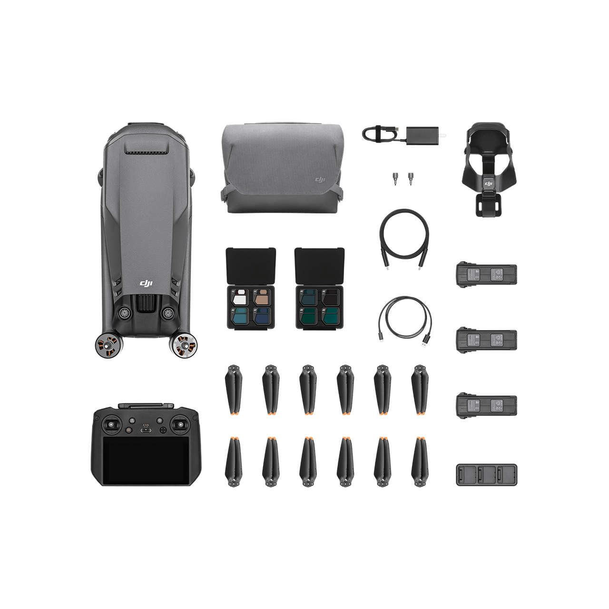
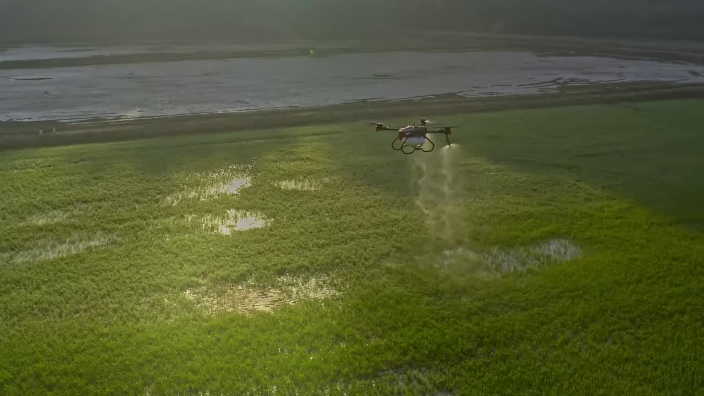
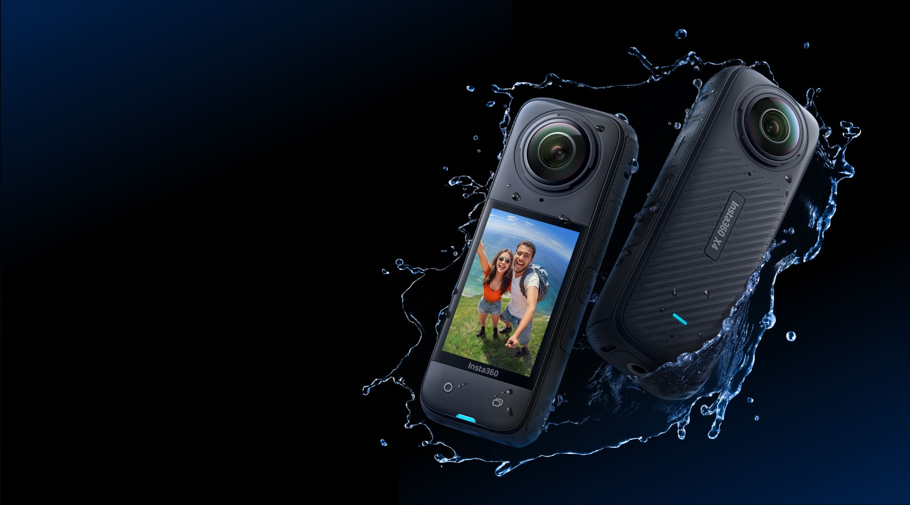

01
大疆航拍影像项目
围绕旗舰航拍无人机的产品内容、拍摄体验与影像表达，梳理从创作灵感到成片输出的完整链路。
- 产品内容与体验表达
- 航拍场景与创作流程
- 影像语言与视觉规范
产品体验
内容策划
无人机



Selected Work
三个项目从不同角度呈现产品理解、内容表达与场景落地。
围绕旗舰航拍无人机的产品内容、拍摄体验与影像表达，梳理从创作灵感到成片输出的完整链路。
面向农业无人机的精准作业场景，关注产品传播、田间叙事和智慧农业的落地表达。
以全景相机为核心，探索运动、旅行与内容创作中的沉浸式影像表达和新型视角。
先拆解产品能力、用户场景和内容边界，再建立清晰的项目表达。
把技术语言转译成用户能感知的体验、画面和故事。
通过真实场景、反馈和内容复盘，持续修正表达方向。
把项目成果整理成可复用、可传播的作品档案。